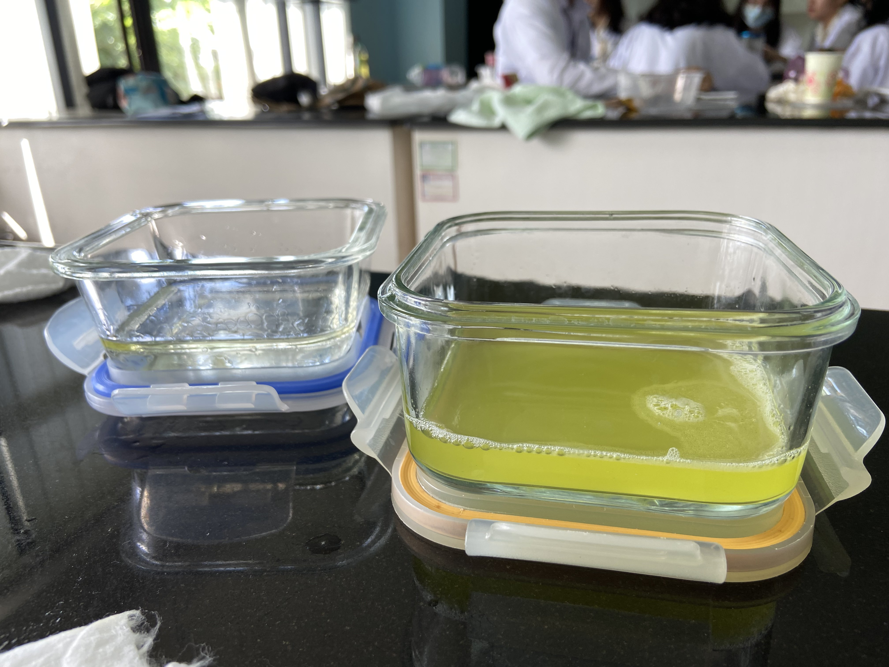

A laboratory activity with the purpose of providing a more profound understanding of the digestive system was conducted last November 29. With the use of simple and accessible materials namely:
Materials
Zip-lock bags
Water
Orange juice
Banana
Crackers
Socks
Paper and plastic cups
Tissue papers
Oil
Liquid Soap
We were able to simulate the main mechanisms of digestion and absorption that happen in our body. With this
laboratory page, we aim to provide our observations and insights regarding ...the said activity and present the processes of digestion that were represented in the experiment.
The digestive system is one of many processes that help organisms function and live. It plays a very
significant role in maintaining one’s health for it breaks down ingested food and absorbs nutrients needed
to sustain life. Through it, organisms are able to break down food and absorb nutrients, giving them
energy to work, grow, and repair.
Understanding the undertaking of the digestive system is vital,
for us human beings at least, because it gives us a deeper sense of appreciation towards the importance
of taking care of our body and it helps us realize the relevance of maintaining a healthy lifestyle.
Biology Laboratory
Procedure:
Put the banana and soda crackers inside the zip-lock bag.
Add a bit of orange juice and water in the bag as well.
Crush and mix the contents of the bag.
Grab a paper cup, cut a hole beneath it, and use it as a flannel to transfer the contents of the zip-lock bag into a sock.
Prepare a tray underneath and squeeze the material in the sock to release the liquid.
After ensuring that all liquid has been released from the content, cut a hole at the bottom of the sock, and surround it with a plastic cup with a hole underneath as well.
~ Digestive System ~

Food Processing
The bananas and crackers being put in the zip lock could represent ingestion or mechanical digestion, which is the intake of food and it entering the body. At the same time it could also simulate the entering of bolus from the esophagus into the stomach.
Out of the two liquids that were used, water and the orange juice, water is less acidic which leads us to believe that the water represents the inactive pepsin called pepsinogen that is released by chief cells.
It represents the stomach where food is stored and digestion begins. This is the site wherein hydrogen and chlorine ions are produced in order to activate the pepsinogen released by chief cells, to make pepsin which is used to break down proteins.
Crushing the food simulates peristalsis in the stomach.
Orange juice was used as a representation of hydrochloric acid, made from hydrogen and chlorine ions released by parietal cells.
The possible biomolecule components of the food inside the zip-lock bags are the four components that are broken down by different organs and at different stages of the digestive system. This refers to carbohydrates or glucose, proteins, nucleic acids, and lipids. After going through the process of digestion, these components would have turned into their simplest versions which are monosaccharides, amino acids, nitrogenous sugars/bases/phosphates, and fatty acids respectively.
Absorption
The liquid flowing out of the stocking represents one way of elimination of undigested food which is peeing.
The tray was used to catch the content that went out of the stocking. In a real life setting, this would compare to toilets.
The material that is left inside the stocking serves as undigested food.
A sphincter regulates the movement of the food throughout the different organs included in the digestive system, this includes the movement of food from its storage in the rectum to it being eliminated through the anus. Pushing the partially solidified content is similar to the act of the sphincter opening in order to excrete the undigested food.
Bile Action
The tissue paper with 4 folds is the one that absorbed the largest amount of water because it has a larger surface area than the others, and the folds allow enhancing the paper's ability to draw in and retain water.
The paper towels can be compared to the small intestine which is one of the most important organs that contribute to the digestive system. The reason for this is that it is responsible for the absorption of nutrients and it contains a lot of enzymes that come from the gallbladder, pancreas, and liver that help further break down carbohydrates, proteins, nucleic acids, and lipids. Its large surface area aids in the absorption of nutrients from food
Bile is an essential and unique substance that is secreted by the liver and stored in the gallbladder. When in use, it functions as a substance that aids in the digestion of fats. In spite of the fact that that process is chemical digestion, given the fact that bile is not a digestive enzyme, and its purpose is to emulsify fat which is a form of mechanical digestion.
Conclusion
The objective of the activity was to simulate the processes present in the digestive system. Through a simple experiment, this objective was accomplished by the individuals involved in the experiment.
The simulation was able to explain and showcase all the concepts that are present in the digestive system, from ingestion, digestion, absorption, and finally elimination. The experiment involving the zip-lock bags, banana, and crackers showed the process of ingestion, digestion, and elimination, whereas the one including the tissue papers, explained absorption.
A visualization of what happens inside one’s body was provided through the said experiment. More than that, it serves as a simpler representation of the complex system that was discussed.